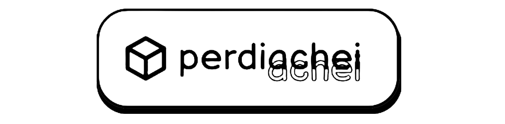
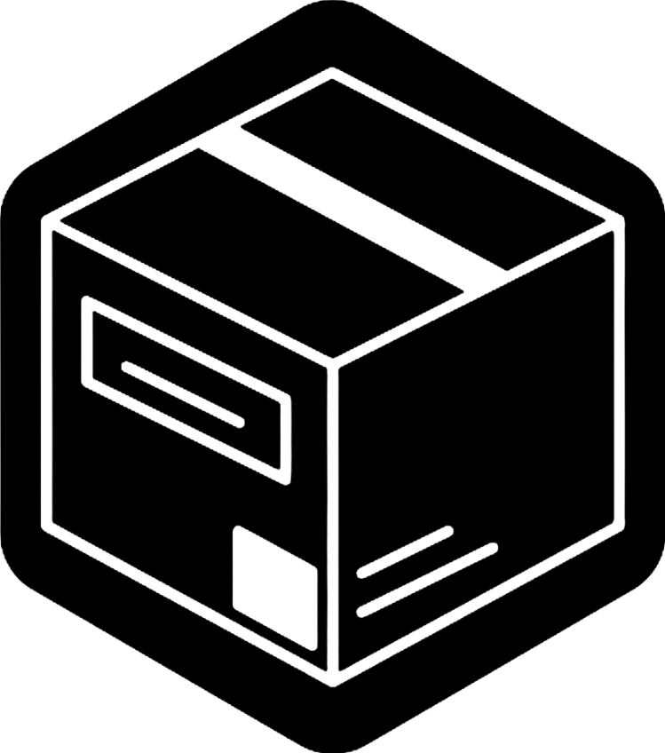

Sobre
Entrar
Perdeu algo? Encontre
Aqui.
Bem-vindo(a) ao perdiAchei! O Achados e Perdidos Online do IFES Campus Serra. Iremos te ajudar a encontrar o que você perdeu nos arredores do IFES!
CADASTRE-SE
